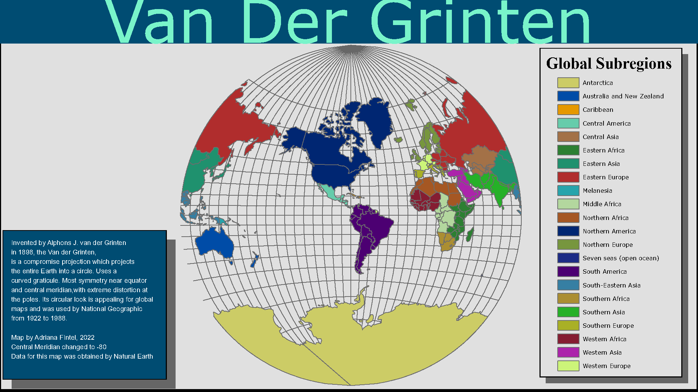

A Look at Van Der Grinten Projection
Near Infrared False Color Composite: Near Lake Okeechobee in Florida
Cartography Portfolio
I am a researcher, a problem-solver, and a nature enthusiast. I love studying the world around me, gathering up bits of knowledge, and exploring connections and new perspectives. I do healthcare work by day and scientific and creative thinking by night. I never want to stop learning, growing, and evolving. I am currently growing in my knowledge of Geographic Information Systems (GIS) through Cal Poly Humboldt. I have a B.S. degree in Wildlife Biology and an M.A. in Environment and Community. My future endeavors will be to use GIS to explore the vast connections between people, places, and nature. Conservation and ecological restoration, human-wildlife conflicts and even people’s equitable access to green spaces are all interests of mine. This page shows some of the projects I have been working on as I go through my GIS learning experience. Also here are just a few of my past publications, contributions, and memberships:


{kind=link}
{kind=link}